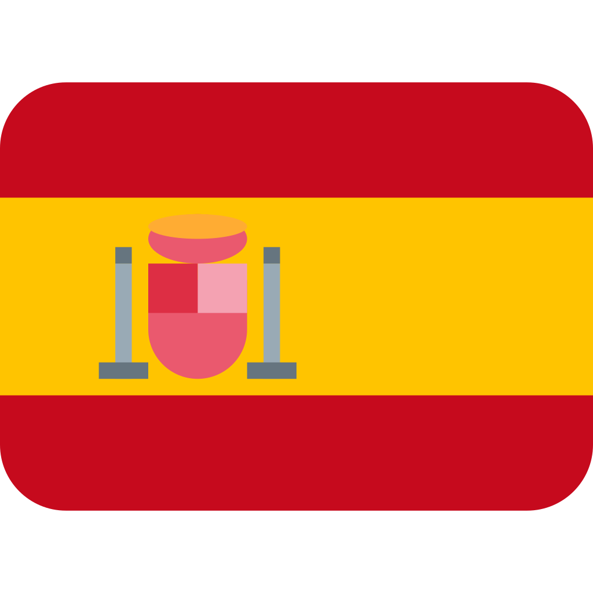
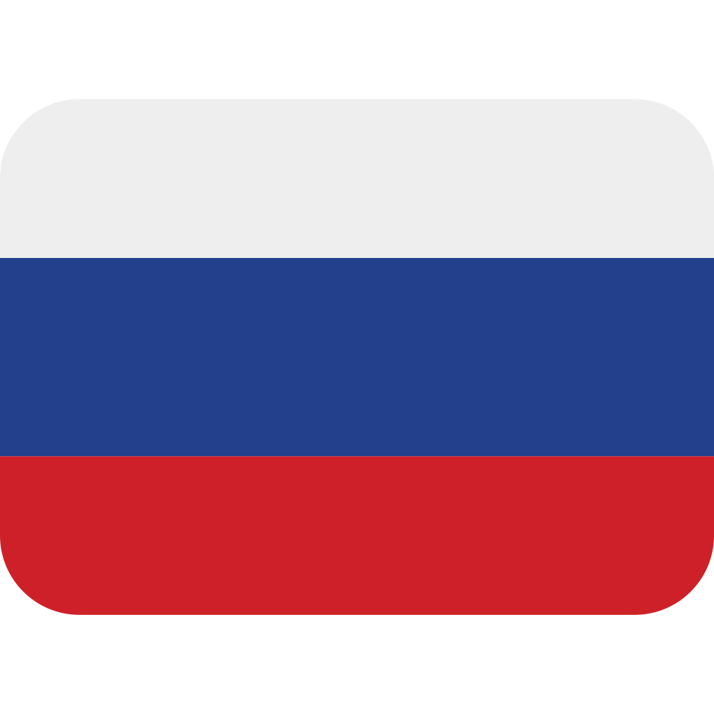

consciousness | conscience
consciencia | conciencia
сознание | совесть
Exploration linguistique d'occurrences trouvées sur le Web
d'équivalents du mot "conscience" en anglais, en espagnol et en russe
Consciousness:
Voici une courte définition ou description pour le mot 1.
Conscience:
Voici une courte définition ou description pour le mot 2.
Consciencia:
Voici une courte définition ou description pour le mot 3.
Conciencia:
Voici une courte définition ou description pour le mot 4.
Сознание:
1. Человеческая способность воспроизведения действительности в мышлении.
2. Восприятие и понимание окружающей действительности, свойственное человеку; мыслительная деятельность, ум, разум.
3. Понимание, осознание человеком или группой людей общественной жизни; взгляды, воззрения людей как представителей общественных классов, слоёв.
4. Ясное понимание, осознание чего-л., мысль, чувство, ощущение чего-л.
Совесть:
Чувство моральной ответственности за своё поведение; нравственная самооценка своего поведения.